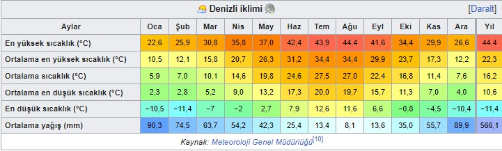

COĞRAFYA
İKLİM
- İlin kuzey kısmı Ege, güney kısmı Akdeniz bölgesine dahildir. Kıyı kesimlerinden iç bölgelere geçit yerinde olduğundan, kuzey kısımda az da olsa iç bölgelerin iklimi hissedilir. Ege Bölgesi ikliminden sıcaklık olarak biraz düşük farklılıklar görülebilir. Denizli'de dağlar genel olarak denize doğru dik olduğundan, denizden gelen rüzgarlara açık bulunmaktadır. Kışlar ılık ve yağışlı geçmektedir. İlde yıllık sıcaklık ortalaması 15,8 °C'dir.

BİTKİ ÖRTÜSÜ
- Denizli'nin bitki örtüsü makidir. Maki küçük çalılara denir. Denizli'nin %59'u ormanlarla kaplıdır.
Çayır ve meralar %10, ekili ve dikili arazi %43'tir. Ekime müsait olmayan kısmı sadece %1'dir.
- İlin bitki örtüsünü çoğunlukla orman ağaçları ile Akdeniz iklimine has makiler meydana getirir.
Ormanlarda karaçam, kızılçam, sedir, ardıç, meşe, kestane, çınar, dişbudak, kızılağaç (Boya ağacı), günlük gibi ağaç türleri bulunur.
Ormanların başladığı sınırların altında kalan dağ eteklerindeki geniş alanlar çalılık ve fundalıklarla kaplıdır.